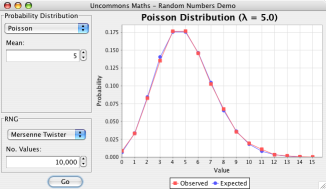
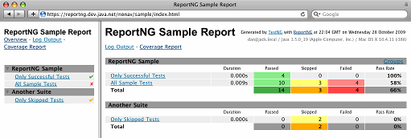

Uncommons.org
Building a Better Wheel
All of the software projects on this page are Open Source software, licensed under the terms of the Apache Software Licence, version 2.0.
The Watchmaker Framework for Evolutionary Computation
-

The Travelling Salesman
An evolutionary program that finds quick solutions to a difficult routing problem. -

Biomorphs
A program that evolves insect-like creatures via user-guided selection. -

Sudoku
A program that visualises the progress of an evolutionary algorithm that solves Sudoku puzzles. -

Mona Lisa
Evolution vs. the Mona Lisa. Reducing a work of art to 50 translucent polygons.
The Watchmaker Framework is an extensible, high-performance, multi-threaded, object-oriented framework for implementing platform-independent evolutionary/genetic algorithms in Java. The framework includes several example applications, some of which you can try out by clicking on the images to the right of this text.
Zeitgeist
Zeitgeist is an intelligent RSS news aggregator. It collates articles from several sources and identifies common themes. It can be used to publish web pages of current topical news stories with related links and relevant photos.
Uncommons Maths
Uncommons Maths is a Java library that provides high-performance random number generators and other mathematical utilities. Includes support for generating random numbers from several probability distributions (Uniform, Gaussian, Binomial, Poisson and Exponential). Also includes classes for working with combinatorics and statistics.
WebStart Demo: Probability Distributions
A Java Programer's Guide to Random Numbers: Part 1, Part 2, Part 3
ReportNG
ReportNG is a simple HTML reporting plug-in for the TestNG unit-testing framework. It is intended as a replacement for the default TestNG HTML report. ReportNG provides a simple, colour-coded view of the test results. ReportNG also includes a second reporter that produces JUnit format XML output.
The Uncommons Antlib is a collection of experimental tools for building modular software with Apache Ant. See also 15 Tips for Better Ant Builds. Includes a pure Java toolchain for rendering DocBook documentation and experimental macros for building Android projects.
ANSI Console Logger
A simple colour-coded console appender for Log4J that displays messages of different severities in different colours.